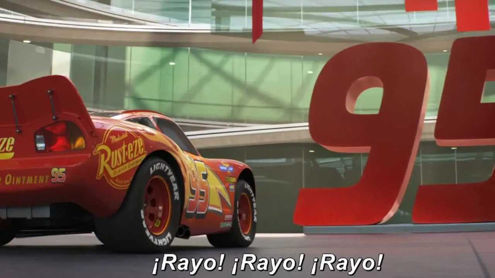
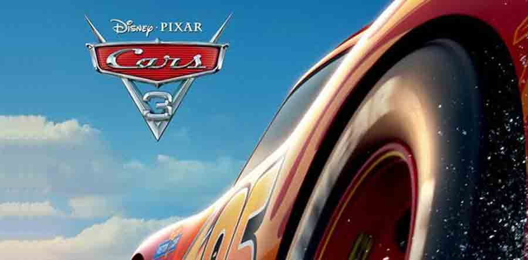

Rayo McQueen, después de muchas reflexiones, decidió que la vida en la pista ya no era para él. Eligió quedarse en Radiador Springs y ayudar a revitalizar el pequeño pueblo junto a Sally.
Con su enfoque en Radiador Springs, Rayo trabajó incansablemente para convertir el pueblo en un destino turístico, atrayendo a visitantes de todo el mundo.
Rayo McQueen dejó un legado duradero, no solo como campeón de carreras, sino como el corazón y el alma de Radiador Springs. Él y Sally vivieron felices, viendo crecer el pueblo y formando una nueva generación de corredores.
